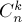
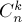

MAXimal
добавлено: 16 Jan 2009 0:58
редактировано: 25 Apr 2012 3:11
Содержание [скрыть]
Перебор всех подмасок данной маски
Перебор подмасок фиксированной маски
Дана битовая маска  . Требуется эффективно перебрать все её подмаски, т.е. такие маски
. Требуется эффективно перебрать все её подмаски, т.е. такие маски  , в которых могут быть включены только те биты, которые были включены в маске .
, в которых могут быть включены только те биты, которые были включены в маске .
Сразу рассмотрим реализацию этого алгоритма, основанную на трюках с битовыми операциями:
int s = m; while (s > 0) { ... можно использовать s ... s = (s-1) & m; }
или, используя более компактный оператор  :
:
for (int s=m; s; s=(s-1)&m) ... можно использовать s ...
Единственное исключение для обоих вариантов кода — подмаска, равная нулю, обработана не будет. Её обработку придётся выносить из цикла, или использовать менее изящную конструкцию, например:
for (int s=m; ; s=(s-1)&m) { ... можно использовать s ... if (s==0) break; }
Разберём, почему приведённый выше код действительно находит все подмаски данной маски, причём без повторений, за O (их количества), и в порядке убывания.
Пусть у нас есть текущая подмаска , и мы хотим перейти к следующей подмаске. Отнимем от маски единицу, тем самым мы снимем самый правый единичный бит, а все биты правее него поставятся в  . Затем удалим все "лишние" единичные биты, которые не входят в маску и потому не могут входить в подмаску. Удаление осуществляется битовой операцией . В результате мы "обрежем" маску до того наибольшего значения, которое она может принять, т.е. до следующей подмаски после в порядке убывания.
. Затем удалим все "лишние" единичные биты, которые не входят в маску и потому не могут входить в подмаску. Удаление осуществляется битовой операцией . В результате мы "обрежем" маску до того наибольшего значения, которое она может принять, т.е. до следующей подмаски после в порядке убывания.
Таким образом, этот алгоритм генерирует все подмаски данной маски в порядке строгого убывания, затрачивая на каждый переход по две элементарные операции.
Особо рассмотрим момент, когда  . После выполнения мы получим маску, в которой все биты включены (битовое представление числа
. После выполнения мы получим маску, в которой все биты включены (битовое представление числа  ), и после удаления лишних битов операцией получится не что иное, как маска . Поэтому с маской следует быть осторожным — если вовремя не остановиться на нулевой маске, то алгоритм может войти в бесконечный цикл.
), и после удаления лишних битов операцией получится не что иное, как маска . Поэтому с маской следует быть осторожным — если вовремя не остановиться на нулевой маске, то алгоритм может войти в бесконечный цикл.
Перебор всех масок с их подмасками. Оценка
Во многих задачах, особенно на динамическое программирование по маскам, требуется перебирать все маски, и для каждой маски - все подмаски:
for (int m=0; m<(1<<n); ++m) for (int s=m; s; s=(s-1)&m) ... использование s и m ...
Докажем, что внутренний цикл суммарно выполнит итераций.
Доказательство: 1 способ. Рассмотрим  -ый бит. Для него, вообще говоря, есть ровно три варианта: он не входит в маску (и потому в подмаску ); он входит в , но не входит в ; он входит в и в . Всего битов
-ый бит. Для него, вообще говоря, есть ровно три варианта: он не входит в маску (и потому в подмаску ); он входит в , но не входит в ; он входит в и в . Всего битов  , поэтому всего различных комбинаций будет
, поэтому всего различных комбинаций будет  , что и требовалось доказать.
, что и требовалось доказать.
Доказательство: 2 способ. Заметим, что если маска имеет  включённых битов, то она будет иметь подмасок. Поскольку масок длины с включёнными битами есть  (см. "биномиальные коэффициенты"), то всего комбинаций будет:
включённых битов, то она будет иметь подмасок. Поскольку масок длины с включёнными битами есть  (см. "биномиальные коэффициенты"), то всего комбинаций будет:
Посчитаем эту сумму. Для этого заметим, что она есть не что иное, как разложение в бином Ньютона выражения , т.е. , что и требовалось доказать.